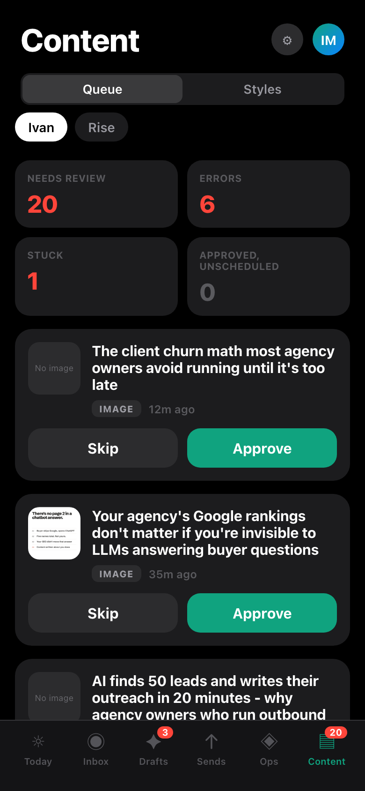
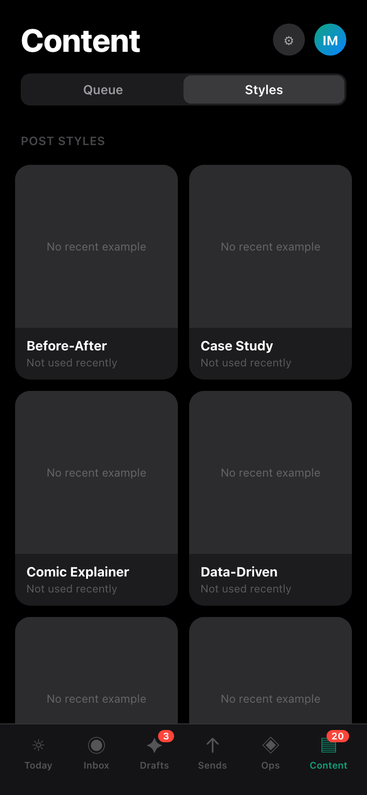
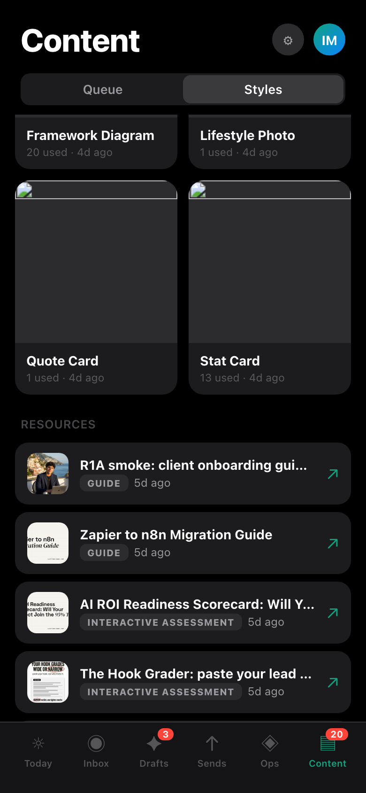
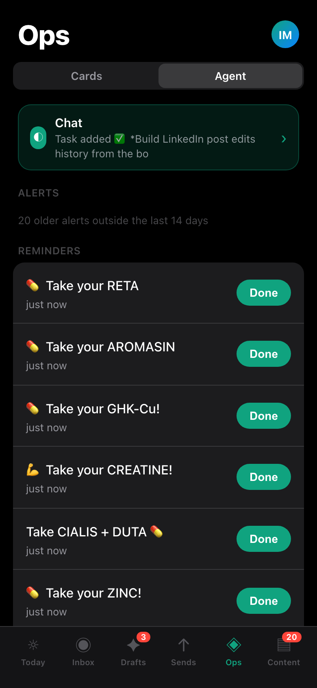
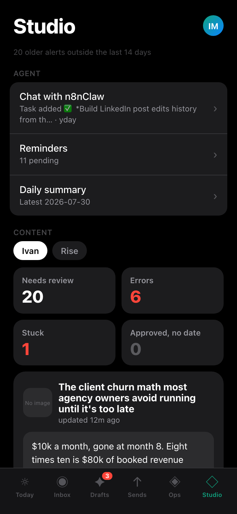
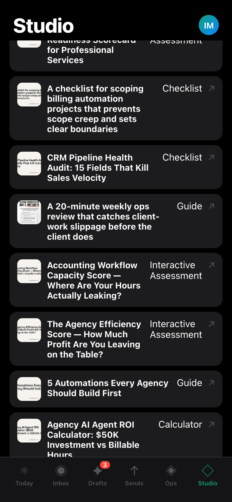
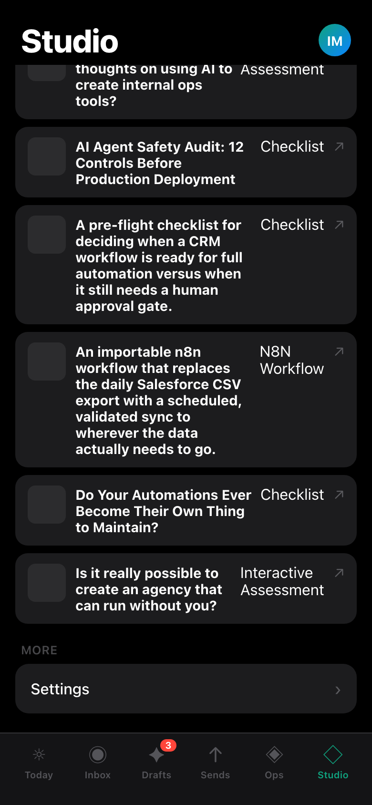
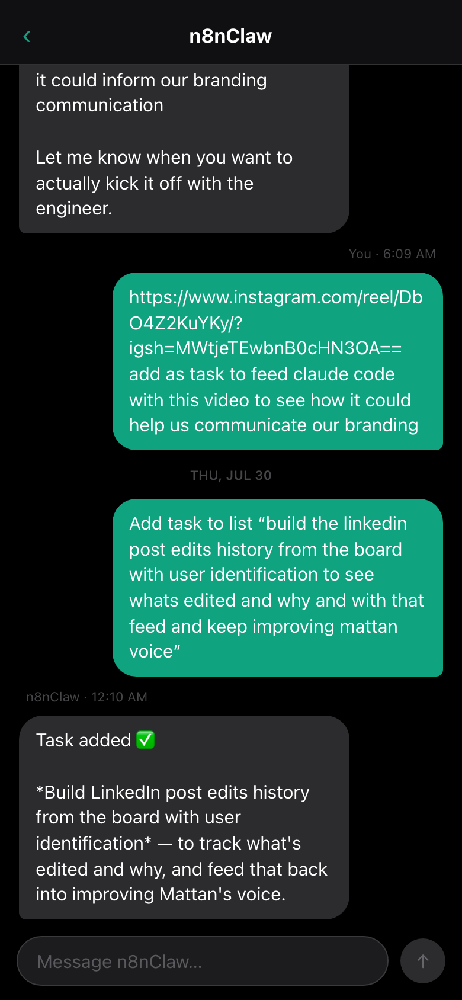

Both finalists are live on your phone right now, wired to real data, invisible to the normal app. Open both links, poke for a minute each, pick one. (Judge panel split: A won daily ergonomics + craft, B won coverage + scalability.)
To leave a candidate on your phone: open …/#exp/off (or just relaunch the app normally later — nothing sticks across a fresh open without the flag).




src/App.tsx replace the exp gate + return <Shell /> with return <CandAShell /> (import from ./exp/cand-a/Shell). Follow-up tidy: fold cand-a into screens/, extend route.ts Tab enum.



src/App.tsx replace the exp gate + return <Shell /> with return <CandBShell /> (import from ./exp/cand-b/Shell). Same follow-up tidy.| Lens | A — Content tab | B — Studio hub | C — absorb into existing tabs |
|---|---|---|---|
| Daily-driver ergonomics | 8 | 5 | 7 |
| Native-ness + craft | 8 | 6 | 4 |
| Coverage + IA scalability | 7 | 8 | 6 |
| Total | 23 | 19 | 17 |
C ("no new tab — Drafts/Ops absorb everything") was eliminated: last on two lenses, systemic layout defects, and "wins the port but forfeits the roadmap." Its two best ideas were grafted into A (truthful tab badge, bucket tiles).
Nothing publishes from either candidate: Ivan-lane approve is a status write (scheduling stays on the board), Rise lane is read-only, LMs are read-only, chat send is RPC-only with no webhook fallback. The winner's apply step is yours to trigger — the run arms nothing.